Now we know what our tables look like and have some basic statistics, lets make some plots (also known as graphs) to further explore the data. To do this, we first tell ggplot which data we want to use, which column should go on which axis ( ggplot(…) ), and then pass that information (using “+”) to a function that draws a plot ( geom_histogram(…) )
# draw histogram showing counts of AANTAL (number of finds), in bins of 100 (divide data in 100 parts)ggplot(feature_sums, aes(x=AANTAL)) +geom_histogram(bins =100)
Warning: Removed 9 rows containing non-finite outside the scale range
(`stat_bin()`).
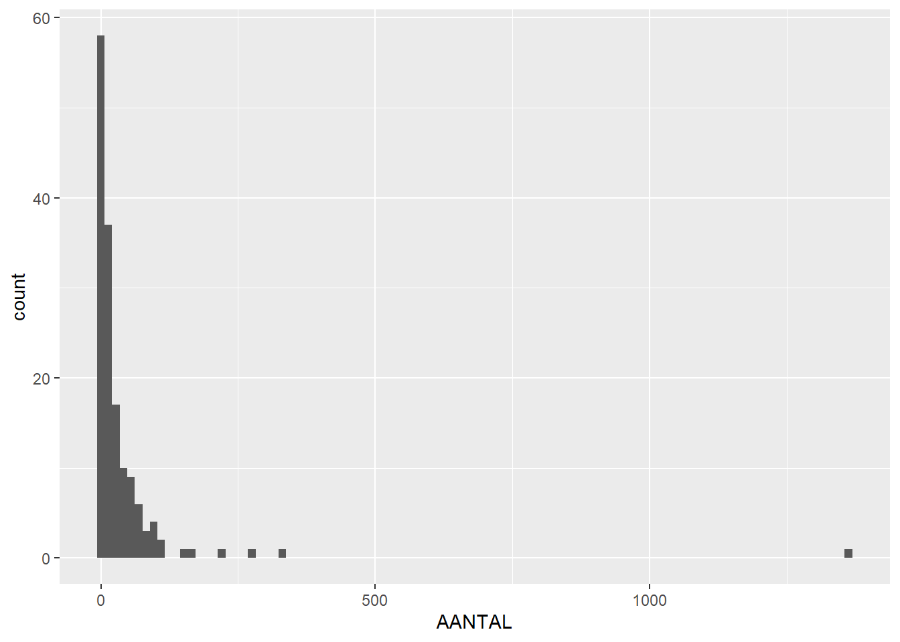
Put your cursor on the ggplot(…) line, press CTRL + ENTER (or press Run) and you’ll see the histogram displayed in the Plots tab on the bottom right. Click on Zoom to view a bigger version, or press Export to save the plot as an image or PDF.
So we can see that the maximum number of finds per features is around 1300 (like we saw in the previous section), but now we can also see that this is an outlier; most features only contain between 0 and 100 finds.
We can also draw a boxplot of this data, to further illustrate this point:
# draw boxplot showing counts of AANTAL (number of finds)ggplot(feature_sums, aes(y=AANTAL)) +geom_boxplot()
Warning: Removed 9 rows containing non-finite outside the scale range
(`stat_boxplot()`).
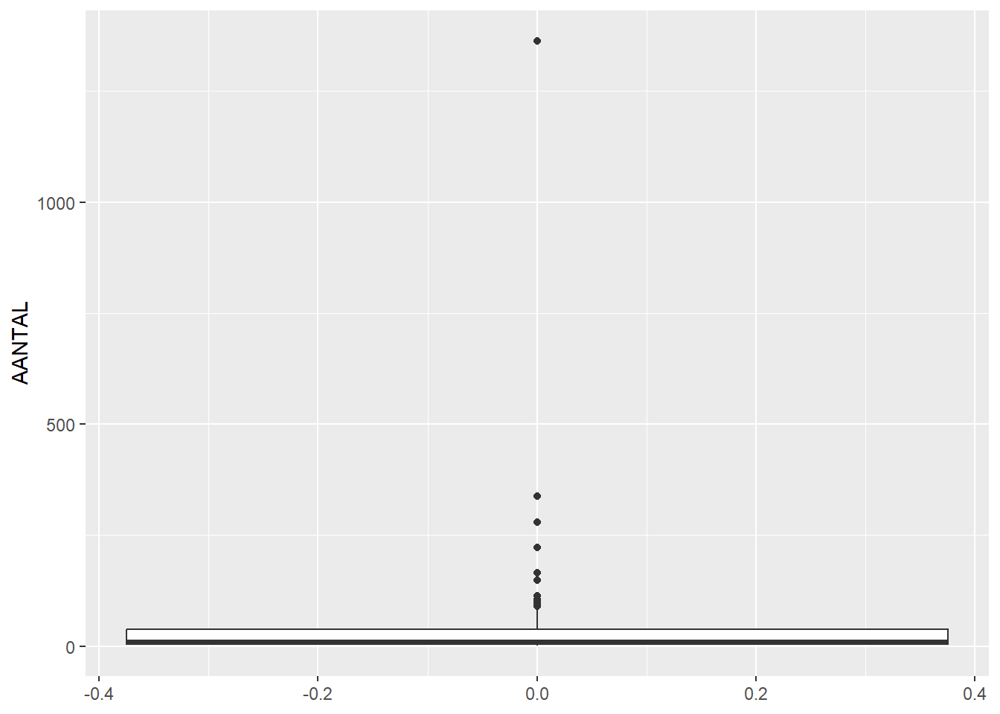
This shows even more clearly that most features contain only a few finds. We can also filter our data to only look at features that contain less than 100 finds, because the high outliers make the rest of the plot hard to read:
# filter data to include only features with 100 or less findsfeature_sums_less_than_100 <-filter(feature_sums, AANTAL <100)# then plot histogram and boxplot againggplot(feature_sums_less_than_100, aes(x=AANTAL)) +geom_histogram(bins =100)
Now to make it a bit more interesting, we can create separate boxplots for different find categories (ABR_ALG), to see which types of artefacts are found in large or small quantities:
# boxplot per find category (ABR_ALG)ggplot(finds_total, aes(x=ABR_ALG,y=AANTAL)) +geom_boxplot()
Warning: Removed 10 rows containing non-finite outside the scale range
(`stat_boxplot()`).
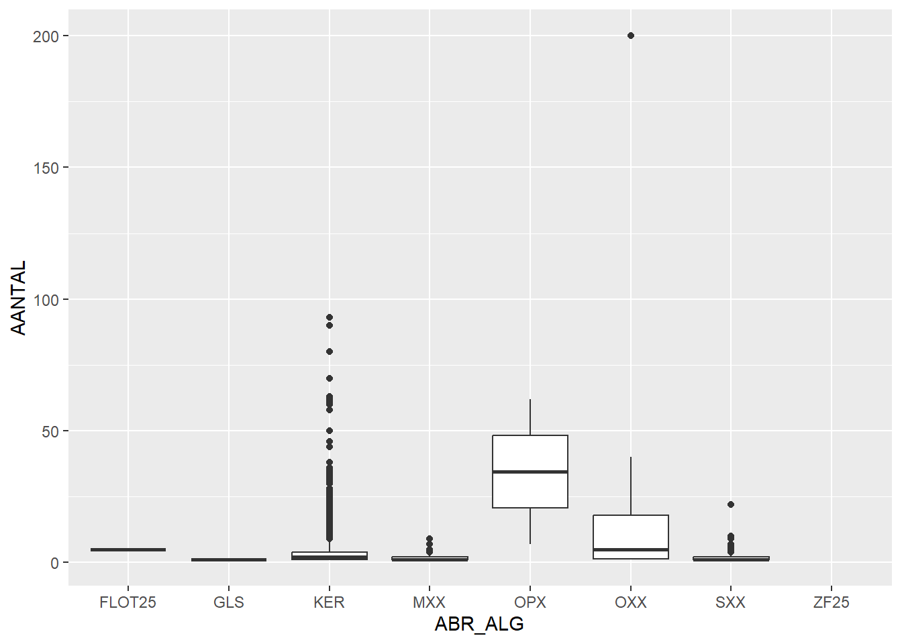
Here we see that OPX (organic, plantbased) has high numbers of finds per bag on average, while SXX (stone) and MXX (metal) have low numbers of finds.
We can also create a barchart showing the number of finds per find category (INHOUD):
# barchart per more specific find category (INHOUD)ggplot(finds_total, aes(x=INHOUD.y,y=AANTAL)) +geom_bar(stat="identity")
Warning: Removed 10 rows containing missing values or values outside the scale range
(`geom_bar()`).
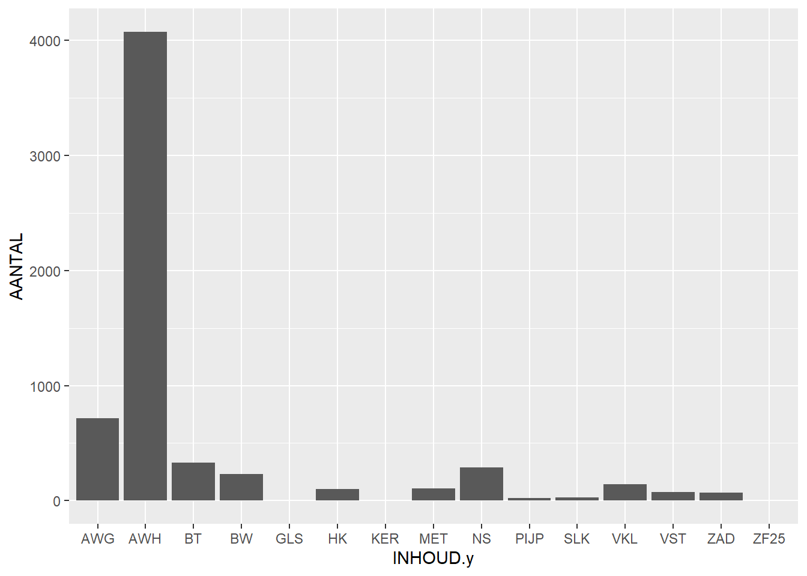
Here we can see that hand-shaped pottery (AWH) is much more prevalent than wheel-thrown pottery (AWG).
Now let’s look at the number of finds per feature (you might need to Zoom to see properly):
# number of finds per featureggplot(finds_total, aes(x=factor(SPOORNR),y=AANTAL)) +geom_bar(stat="identity")
Warning: Removed 10 rows containing missing values or values outside the scale range
(`geom_bar()`).
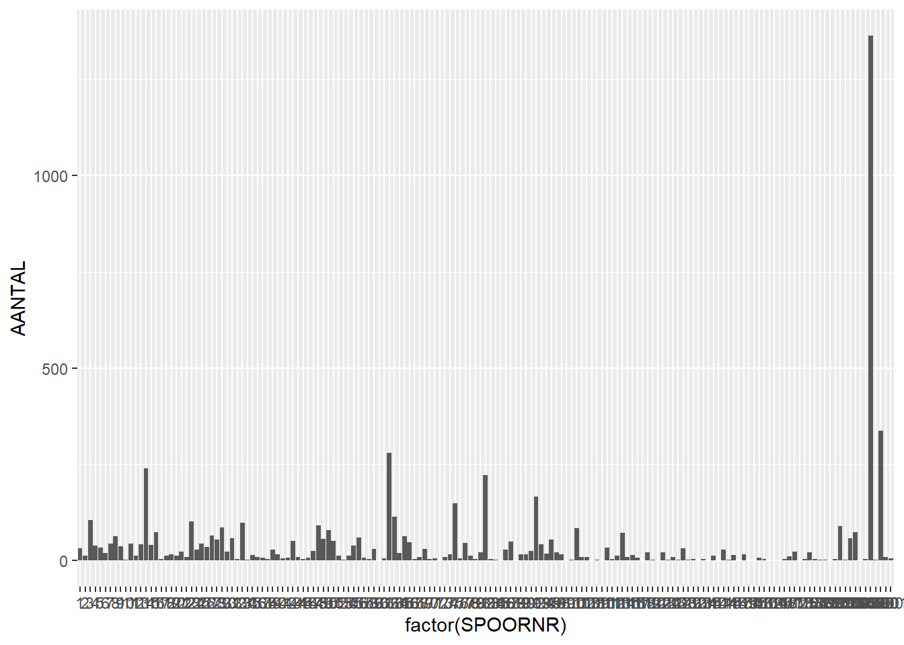
We can again see that one feature contains over a thousand finds, while the others contain much less. But which proportion of finds is which find category?
# number of finds per feature, stacked bar based on find type (ABR_ALG)ggplot(finds_total, aes(x=factor(SPOORNR),y=AANTAL, fill = ABR_ALG)) +geom_bar(stat="identity")
Warning: Removed 10 rows containing missing values or values outside the scale range
(`geom_bar()`).
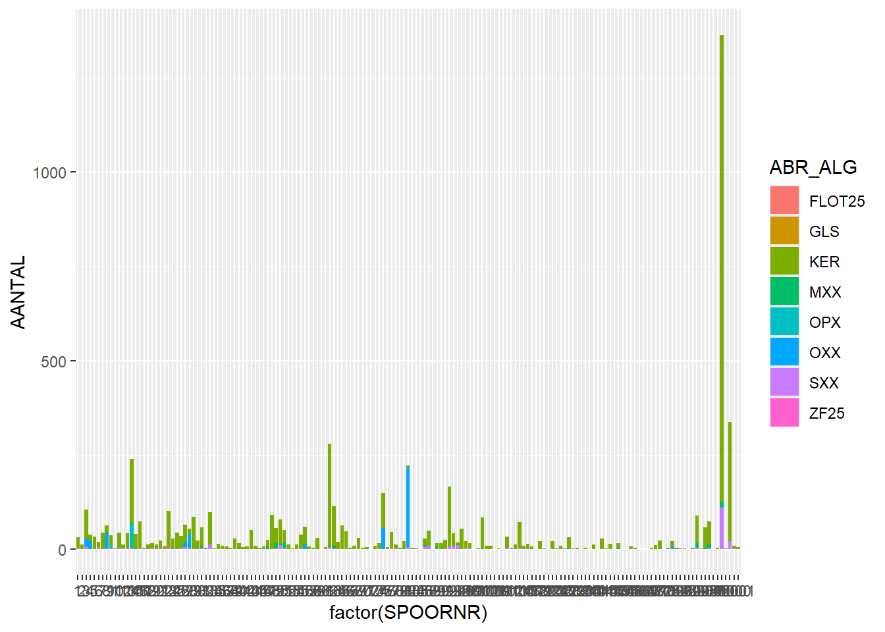
Interesting, now we see that most features contain pottery (KER), some contain small amounts of stone (SXX) and about 7 features contain noticeable amounts of organic material (OPX/OXX).
Instead of a stacked barchart, we can also plot each category separately by adding + facet_wrap(~ABR_ALG) to the previous line and removing the fill:
# number of finds per feature, separate bar charts based on find type (ABR_ALG)ggplot(finds_total, aes(x=factor(SPOORNR),y=AANTAL)) +geom_bar(stat="identity") +facet_wrap(~ABR_ALG)
Warning: Removed 10 rows containing missing values or values outside the scale range
(`geom_bar()`).
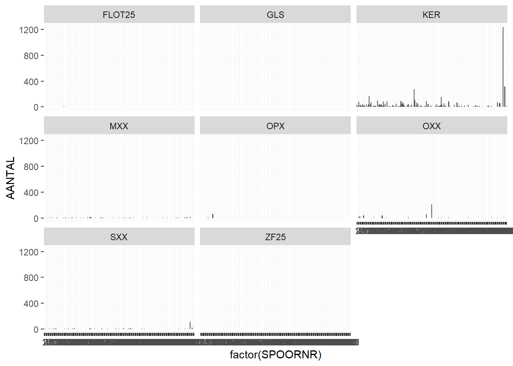
Although in this case this is quite hard to read due to the individual plots being too small!
Plotting Weight
Now let’s do the same for weight:
# histogram and boxplot showing distribution of weight over featuresggplot(feature_sums, aes(x=GEWICHT)) +geom_histogram(bins =100)
Warning: Removed 10 rows containing non-finite outside the scale range
(`stat_bin()`).
Warning: Removed 11 rows containing missing values or values outside the scale range
(`geom_bar()`).
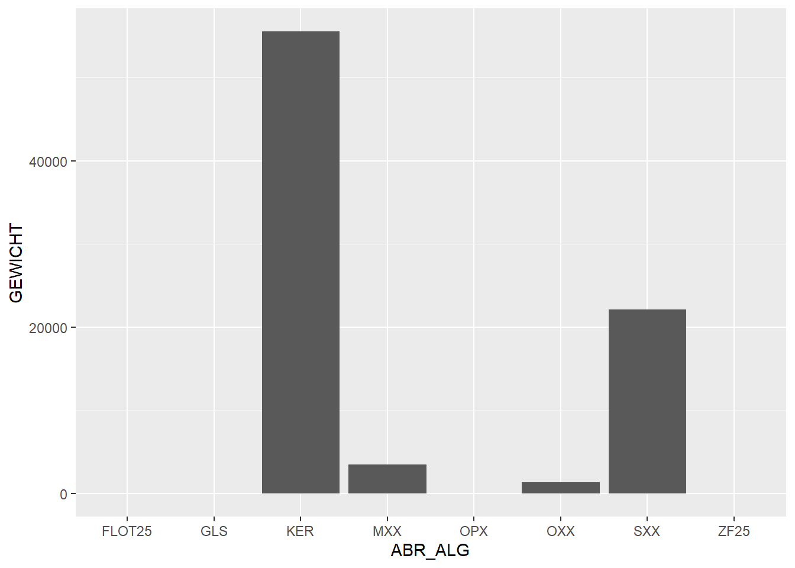
In these last two plots, we can see that stone (SXX) has a high total weight, even though in our earlier plot of number per category, stone was low in numbers. So we can conclude that stone artefacts have a high weight on average. If we look at the stacked bar chart of weight per feature we see the same phenomenon:
# stacked bar chart of weight per feature, with find category as fillggplot(finds_total, aes(x=factor(SPOORNR),y=GEWICHT, fill = ABR_ALG)) +geom_bar(stat="identity")
Warning: Removed 11 rows containing missing values or values outside the scale range
(`geom_bar()`).
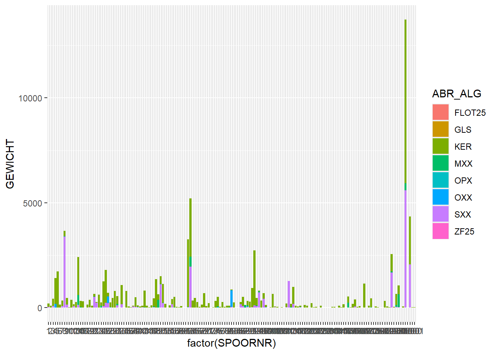
Plotting Relations Between Columns
We can also express this relationship between weight and number of finds in a scatter plot:
# add find type to feature sumsfeature_groups_type <-group_by(finds_total, SPOORNR, ABR_ALG)feature_sums_type <-summarise(feature_groups_type, AANTAL =sum(AANTAL), GEWICHT =sum(GEWICHT))
`summarise()` has grouped output by 'SPOORNR'. You can override using the
`.groups` argument.
# plot relationship between weight and quantity, per feature. Colour per find typeggplot(feature_sums_type, aes(x=GEWICHT,y=AANTAL, colour = ABR_ALG)) +geom_point(alpha =1/3)
Warning: Removed 10 rows containing missing values or values outside the scale range
(`geom_point()`).
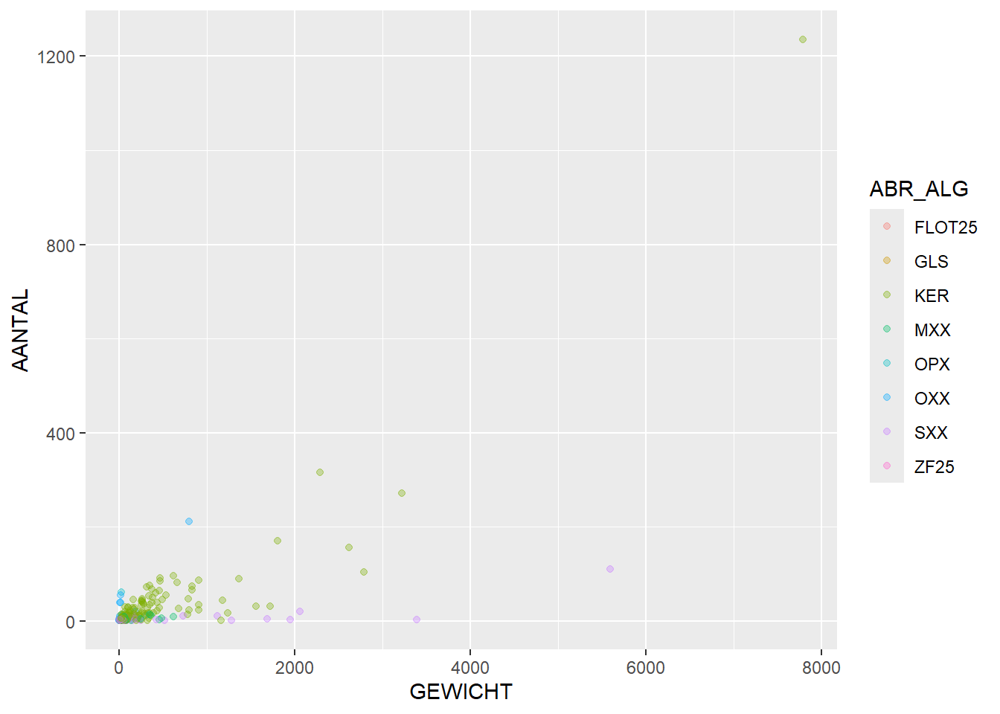
In this graph we can see that stone (SXX) tends to be high in weight, but low in number, while organic material (OPX/OXX) is high in number but low in weight.
Instead of looking at this at the feature level, we can also easily plot this at the trench level by putting the trench number (PUTNR) on the x-axis:
# plot quantities per trenchggplot(finds_total, aes(x=factor(PUTNR),y=AANTAL)) +geom_bar(stat="identity")
Warning: Removed 10 rows containing missing values or values outside the scale range
(`geom_bar()`).
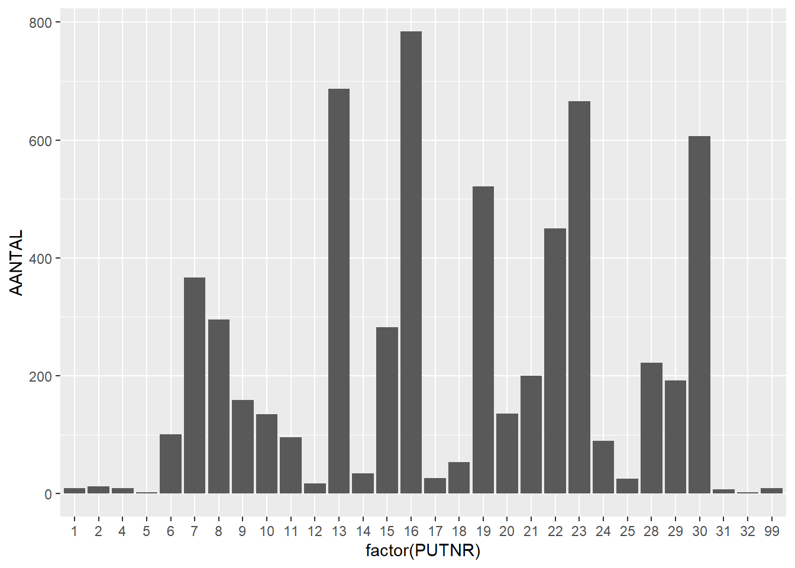
ggplot(finds_total, aes(x=factor(PUTNR),y=AANTAL, fill = ABR_ALG)) +geom_bar(stat="identity")
Warning: Removed 10 rows containing missing values or values outside the scale range
(`geom_bar()`).
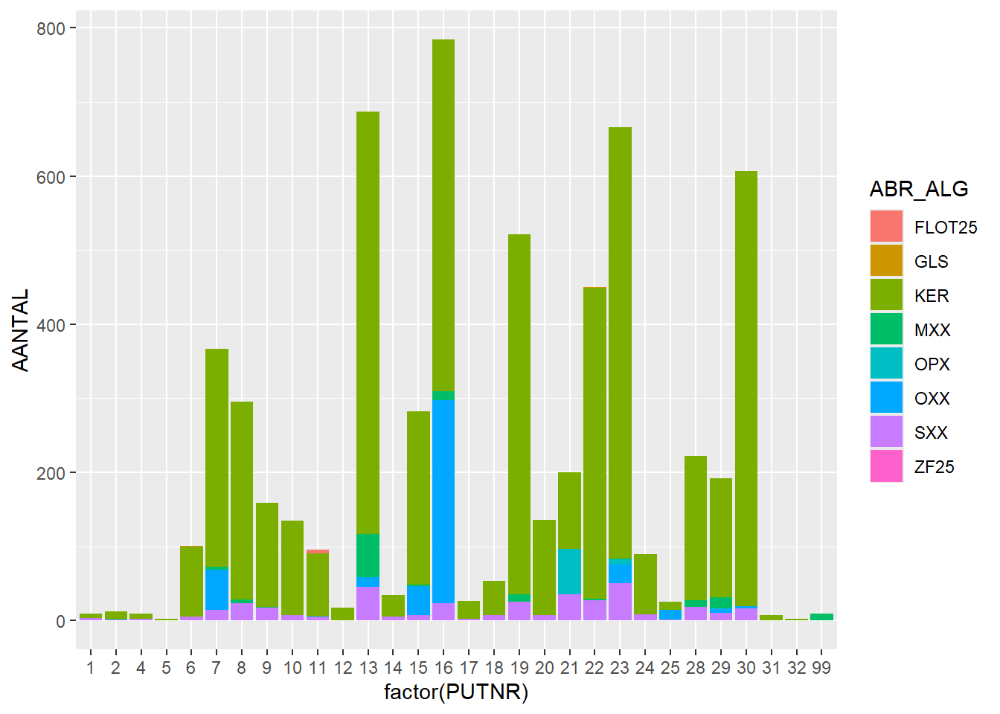
# plot weight per trenchggplot(finds_total, aes(x=factor(PUTNR),y=GEWICHT)) +geom_bar(stat="identity")
Warning: Removed 11 rows containing missing values or values outside the scale range
(`geom_bar()`).
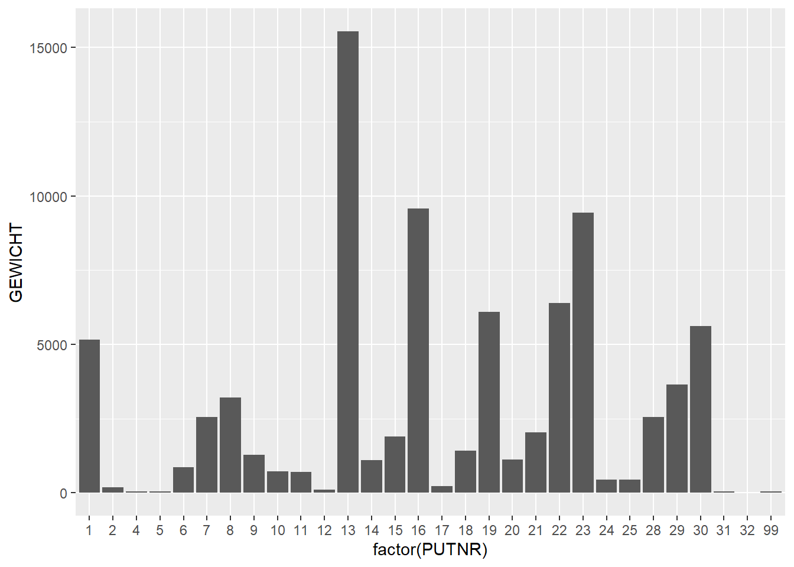
ggplot(finds_total, aes(x=factor(PUTNR),y=GEWICHT, fill = ABR_ALG)) +geom_bar(stat="identity")
Warning: Removed 11 rows containing missing values or values outside the scale range
(`geom_bar()`).
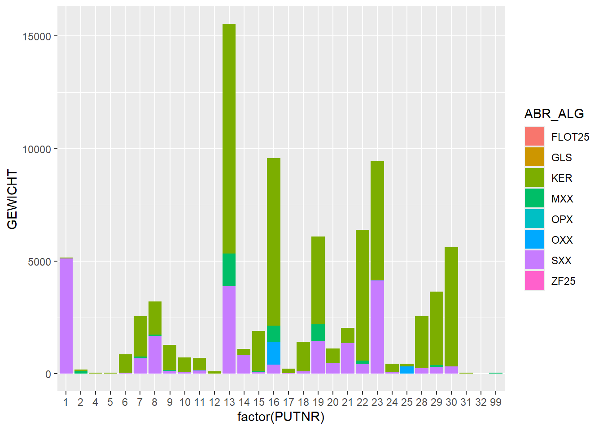
Instead of looking at the number or the weight of finds we can also look at the relation of the two. This is done by dividing the total weight per feature by the number of sherds. This is called the break_index below. We can plot this in a histogram.
Warning: Removed 10 rows containing non-finite outside the scale range
(`stat_bin()`).
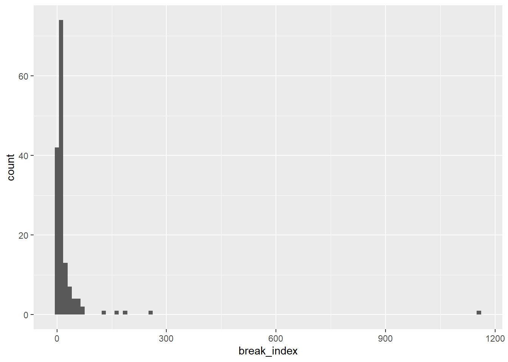
It becomes clear that we have some extremes and therefore need to filter the extremes out. We continue our analysis with the smaller break_indices (< 100). We have used histograms so far. However, histograms have a very big disadvantage and that is that they are dependent on the size and startpoint of bins. Kernel Density Estimation is much more flexible and robust (see also this paper from 1996: http://www.archcalc.cnr.it/indice/PDF7/33_Baxter_Beardah.pdf(Baxter and Beardah 1996)). See and compare these two for yourself. You can also make the for the other data you’ve analysed in the sections above.
At this point, if you’ve run into any errors or problems, you can download and copy this file to get a working script.
There is a feature with and extreme amount of finds. This is feature (SPOORNR) 3000. Try to make a barplot with the number and weight of finds in the feature.
At this point you are welcome to try plotting other types of data or relationships.
Try and use the examples above to create your own analyses.
Start playing in R!
References
Baxter, M. J., and C. C. Beardah. 1996. “Beyond the Histogram. Improved Approaches to Simple Data Display in Archaeology Using Kernel Density Estimates.”Archeologia e Calcolatori VII: 397–408.
![]()